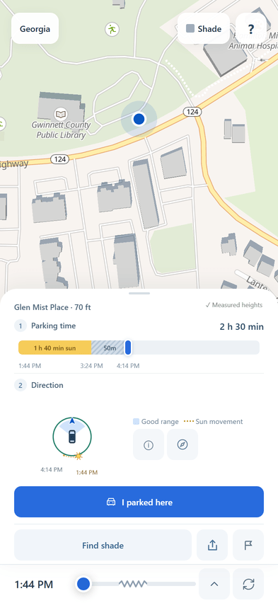

쓰는 법
- 링크를 엽니다. 앱 설치 없이 사파리·크롬에서 바로 열립니다. 홈 화면에 추가해 두면 앱처럼 쓸 수 있어요.
- 주차할 자리를 탭합니다. 지도를 손가락으로 옮기고 확대해서 실제 주차 칸 위를 누르세요.
- Parking time에서 머물 시간을 고릅니다(기본 1시간). 막대에 햇빛과 그늘 구간이 시간과 함께 나옵니다.
- Direction 그림을 봅니다. 파란 부채꼴 쪽으로 차 앞을 두면 앞유리에 햇빛이 덜 들어옵니다.
- 주차했으면 I parked here를 누르세요. 나중에 앱을 다시 열면 My parking에서 그동안 해가 얼마나 들었는지 보여 줍니다.

화면의 영어 단어
- Parking time
- 머물 시간. 막대를 끌어 15분 단위로 바꿉니다
- Direction
- 차 앞을 둘 방향. Good range가 좋은 범위, 노란 점선 Sun movement가 해가 움직이는 길
- I parked here
- 지금 주차한 자리를 이 폰에만 기록 (24시간)
- My parking
- 기록한 주차 결과 보기 · End parking으로 기록 종료
- Find shade
- 150m 안의 주차장 중 더 오래 그늘인 자리 찾기
- ⚑ (깃발)
- “여기 틀렸어요” 제보
- 아래 시간 막대
- 다른 시각의 그림자 보기 · Now는 지금으로 돌아오기
미리 알아 두실 점
- 나무 그늘은 계산하지 않습니다. 건물 그림자만 봅니다. 앱이 “햇빛”이라 해도 실제로는 나무 그늘일 수 있어요.
- 지도에 없는 건물은 그림자도 없습니다. 새로 지은 건물은 빠져 있을 수 있습니다.
- 귀넷 카운티가 가장 정확합니다. 이곳 건물 높이는 항공 레이저 측량(LiDAR)으로 잰 값입니다. 다른 지역은 추정 높이가 섞여 있습니다.
- 예상이지 보장이 아닙니다. 구름은 그늘 계산에 넣지 않고(흐린 날은 알림만), 건물 높이에는 오차가 있습니다. 차 안 온도도 계산하지 않습니다.
부탁드리는 것
- 실제로 주차할 때 한두 번 써 봐 주세요.
- 앱 말과 실제가 달랐다면 그 자리에서 ⚑ 깃발로 알려 주세요. 메모 한 줄이면 충분합니다.
- 헷갈렸던 화면, 처음 보고 이해가 안 됐던 단어가 있으면 카톡으로 편하게 알려 주세요. “이게 뭔지 몰랐다”가 제일 도움이 됩니다.
개인정보
- 계정·쿠키·광고가 없습니다. 누가 쓰는지 모릅니다.
- 사용 기록(화면 보기, 지도 탭)은 위치를 약 100m 단위로 뭉개서 저장합니다.
- 깃발로 제보하면 누른 자리의 정확한 좌표와 시각, 적은 메모가 저장됩니다. 내 위치나 기기 정보는 붙지 않습니다.
- 주차 기록(I parked here)은 내 폰에만 저장됩니다.
자세히: shadespot.app/privacy (영문)